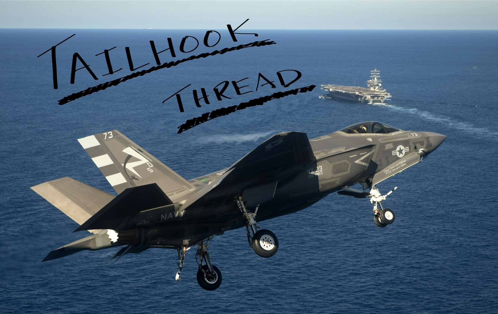
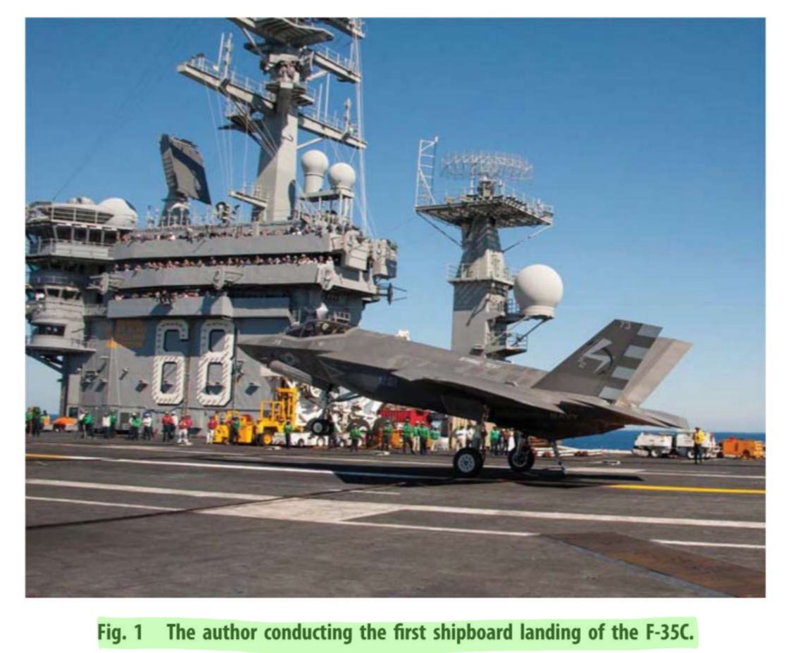
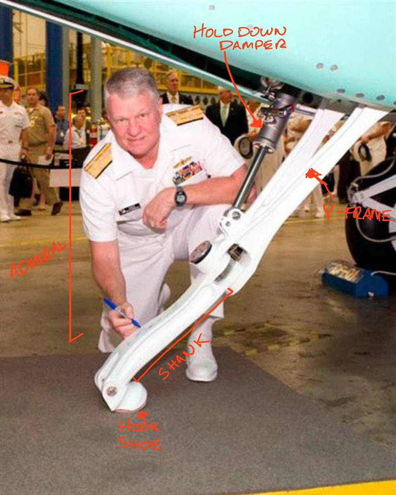
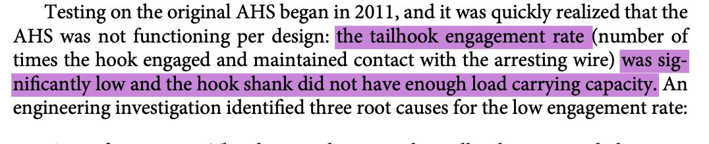
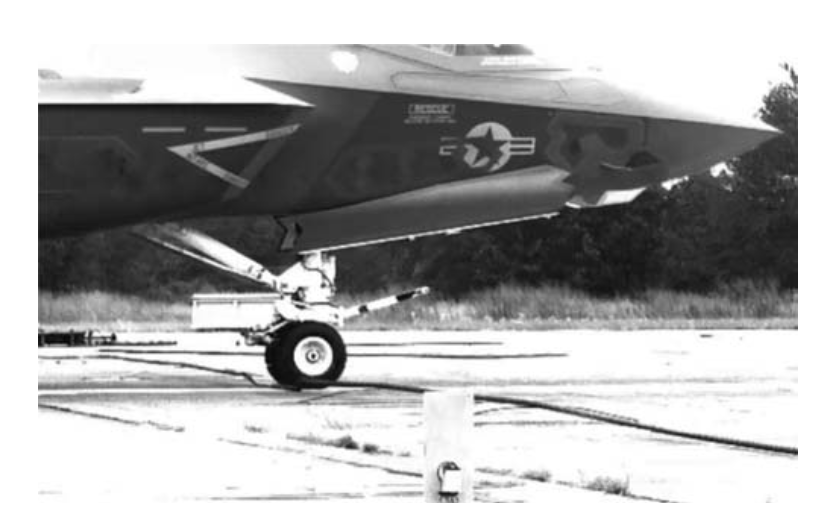
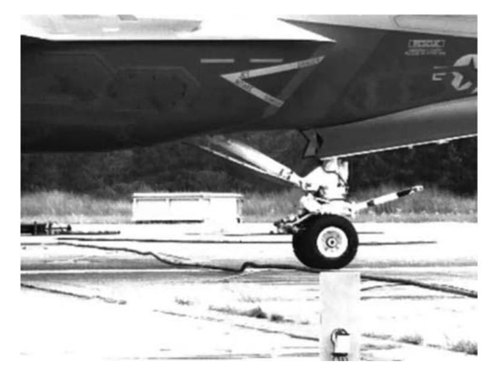

Welcome to the blog. As a way to kick things off, here’s a single-page version of my thread on the F-35C tailhook.

The primary source for material here, aside from my own experiences, is “F-35C Carrier Suitability Testing” by Tony “Brick” Wilson, who gives us one of the greatest flexes in an AIAA paper I’ve ever seen.

The F-35C is the variant of the F-35 Joint Strike Fighter intended for use on CATOBAR (Catapult Assisted TakeOff, Barrier Assisted Recovery) aircraft carriers operated by the United States Navy. Aircraft are launched via steam or electromagnetic catapults, and on landing, the aircraft uses a tailhook to engage an arresting wire.
The F-35C hook is stowed in a bay that’s covered by clamshell doors during flight. The hook is electronically controlled and moved by hydraulics. And originally, it didn’t work.

We began serious carrier suitability testing with F-35C at Lakehurst NAS in the summer of 2011. We would hold our briefings in the same hangar that the Hindenburg was trying to reach when it crashed. This is a level of irony that took zoomers another ten years to reach.

After things like Jet Blast Deflector compatibility testing, we get down to testing the hook. Brick tells us, in a masterful understatement:

I was at Lakehurst for most of this testing and I never saw the hook engage the wire. It was interesting to see it play out this way. I heard it predicted first, by, of all people, one of our instrumentation technicians on November 6, 2010 That was the day CF-01 arrived at Pax. We went to look at the jet. I remember standing with this tech, looking at the hook.
“Boss,” he says to me, “This fucker ain’t gonna work. Look at this thing. It’s short, it’s too close to the wheels, and look at this dumbass hook shoe they got on it. If the wire don’t hit it exactly right, it’s just gonna go under the hook and you’ll bolter.”
The hook point is only a little over 7 feet from the main landing gear axle center. The amount of space in the airframe available is extremely tight, so this is what the designers had to work with.
Here’s pretty much what we were looking at in this conversation.  Why was it like this?
Why was it like this?
Because the engineers at Northrop Grumman engineered to a computer model that can simulate how an arresting wire acts when used for arrestment, and the model was wrong.
I heard years later in the course of my job verifying and validating other F-35 simulations that the wire dynamics model supplied by the Navy had not been properly V&V’d. I don’t know this for sure. However it happened, the model led to a design that didn’t work.
To understand how it didn’t work, back to Brick’s article. When an aircraft performing an arrestment lands, its main and/or nose tires hit the wire first. This starts a wave in the wire that moves away from the tire. Here’s an example, the nose gear has just hit the wire.

Now the aircraft continues to move forward. We have a wave propagating in both directions along the wire, causing the wire to lay mostly flat against the deck.  The wire dynamics model said that what should happen next is that the wire rebounds off the deck. But what actually happened is that the wire stayed down and the hook skips over the wire.  What isn’t shown is how FAST the hook would rebound into the jet. The readings were so high that the test team believed the accelerometer measuring hook up-swing was broken, but it wasn’t.
What isn’t shown is how FAST the hook would rebound into the jet. The readings were so high that the test team believed the accelerometer measuring hook up-swing was broken, but it wasn’t.
We tried, and tried, and tried over and over again to get the hook to work. While we were at Lakehurst, the program had a few days where we were forbidden from flying due to an IPP issue, but we kept trying roll-in arrestments at slower and slower speeds. None were successful. The hook kept rebounding at very high angular accelerations, damaging our very fragile tailhook instrumentation.
Many of my memories of August 2011 are of sitting on the concrete floor of a clamshell near the old F-8/F-14 engineering building, cleaning up damaged wiring and tediously calibrating rotational position sensors on the tailhook. All usually done late at night.
Hurricane Irene came through late in the month and made a direct line for us at Lakehurst. I came in to work one morning only to turn around and go back to my hotel and leave for home; the jet was sent back to PAX, ending our frustrating trials.
It was clear that the hook needed a redesign. The new hook has much stronger hold down damper, an all new damper for the upstroke, a better lateral limiter, and improved instrumentation that didn’t break on every arrestment. Here’s the new hook:

We also got an all new hook shoe! This one looks much more like a scoop, to catch the wire even if it’s down low on the deck. The new hook profile in red, old in blue, the arresting cable shown in purple:

Now, program note: for personal circumstances, I left the F-35 program entirely in mid 2012 only to return a little less than two years later to the same job. So I wasn’t there to see this in 2013:

The story most definitely does NOT end here though, because we had much struggle to go. We kept having issues with the bearing that the pitch pivot pin sits within. The pin is supposed to last at least 25 arrestments, but we were getting 1-2 before the pin sleeve would gall. We had a position sensor in that pin/sleeve to directly tell the control room the hook angular position during test, and all this pivot pin replacement meant I and a few other engineers spent a LOT of time working on CF-03’s tailhook.
During my years on the F-35 flight test program, I usually worked night shift engineering. Night shift had next to no meetings, it was pure flight support, problem solving, and performing instrumentation preflights for the next day’s test. Me and another engineer almost always worked together on the mission systems jets. CF-03 and its tailhook (as well as its launch bar and gear) instrumentation needed so much care and feeding that one of us would work just on CF-03. The other would take both BF-04 and BF-05.
We worked out some tricks for being able to replace a pitch pivot pin without having to re-perform a synchro (rotational position sensor) calibration. Why? because new calibrations mean new instrumentation projects, which took several days and required a display check. Engineers, saving your program time and money out of the sheer laziness of not wanting to make a new XML format for an instrumentation project. This is how progress is made in the world, I guess. Most of 2015 saw me paying more attention to instrumentation project efficiency (something that, I am pleasantly surprised to see, gets a 1 paragraph mention in “From Concept to Cockpit”) but in 2016 I returned to Lakehurst with CF-03 to perform the trickiest tailhook tests.
We were doing tests with full external weapons (modulo not having AIM-9X on the outer wing stations…the wing structure needed a fix) and trying for off-center arrestments.
One cloudy day in May 2016 we try for an arrestment as far off centerline as we can go.
Here’s the story of that day.
I am sitting in something called the MITS (Mobile Instrumentation/Telemetry System). It’s literally a giant 18 wheeler trailer the Navy made that’s a mini control room. I am watching my instrumentation health screen and listening to the test audio, while watching the video on a television in the trailer.
An F-35C coming in for landing is usually at about 11 to 13 degrees nose high so that when it hits the carrier deck, it looks something like this:

Everything seems normal at first. I hear our pilot call the ball. But then I see on the screen that he’s actually coming in almost flat, and sinking like a stone. I expect to hear “WAVE OFF” from the fellow pilot monitoring him on the ground, acting as the Landing Signal Officer. I don’t hear that. And horrified, I watch on the video screen as the F-35 hits the ground with all three tires at once, then bounces off the runway, hits the runway again. The control room is full of engineers muttering curses under their breaths and staring at their screens.
Through the hotmic channel we have recording everything our pilot says and hears, I hear him yell “FUCK!” but he keeps control somehow and gets back in the air. “Lightning seven three is airborne, going back around” he says on the radio. Someone in the control room says hat we have violated a flight test continuation criterion: we hit so hard that all the landing gear bottomed out. The lead test engineer gets on the radio and says “We need a gentle flared landing.” The pilot replies, “My body needs a gentle flared landing.”
Fortunately, once we come back around for a conventional landing, there is no further difficulty. But now, the post-flight debrief we we have to talk about what happened and decide what to do next.
An immediate review of the data shows that the landing was at such a high sink rate that it is as if we have taken the F-35C and dropped it from a height of 20 feet. We hit almost entirely flat, just 2 degrees angle of attack.
It turns out that somehow the fresnel lens optical landing system (FLOLS) we are using was not set properly. Thus when the pilot thought he was flying on glideslope, he was flying a much too steep path. The LSO did not realize what was happening until it was too late.
Much consultation has to be done with the leaders of the program at Fort Worth. The day is late, the jet is impounded by the crew chief and no one is to work on it until formal inspection criteria are created. They arrive the next morning in my email, 200+ steps that I must conduct just on my flight test instrumentation hardware. Other maintainers and engineers have their own thick inspection stacks. It takes three days. We discover that we need new landing gear, but that can’t happen at Lakehurst. ortunately it looks like the gear is good enough to support one more takeoff/landing cycle, so back to PAX it goes. The program decides to officially stop trying to chase the off-center arrrestments and wire only arrestments.
Thus ends the tailhook test saga.